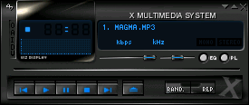

Воспроизведение звука и видео
Introduction to Linux. A Hands on Guide —
Введение в Linux. Руководство по работе
Проигрывание и копирование CD
Пакет cdp поставляется с большинством дистрибутивов и предоставляет программу cdp или cdplay, текстовый проигрыватель компакт-дисков. Десктопные менеджеры обычно включают в себя графический инструмент, например, проигрыватель gnome-cd в Gnome, который может быть запущен из меню.
Надо понимать, что есть разница между аудио-дисками и CD с данными. Вам не надо монтировать аудио-CD к файловой системе, чтобы послушать его. Это связано с тем, что данные на таких CD не являются данными файловой системы Linux; они сразу доступны и отправляются в канал аудио выхода проигрывателем компакт-дисков. Если же ваш CD является диском с данными, который содержит файлы .mp3, вам придется сначала примонтировать его к файловой системе и только потом слушать музыку с помощью одной из программ, которые мы перечислим ниже.
Утилита cdparanoia из одноименного пакета читает аудио непосредственно в виде данных с компакт-диска без аналогового преобразования и записывает их в файл или канал в различных форматах, в том числе .wav, как, вероятно, самый популярный. Различные инструменты для конвертирования в другие форматы, например, .mp3, поставляются с большинством дистрибутивов или загружаются как отдельные пакеты. Проект GNU предоставляет несколько проигрывателей CD, программ для копирования, кодирования и управления звуком.
Очень легко создавать аудио-CD с помощью kaudiocreator, входящего в состав пакета KDE. Информация о нем есть в справочном центре KDE.
Проигрывание музыкальных файлов
Файлы mp3
Популярный формат .mp3 поддерживается Linux. Большинство дистрибутивов включают несколько программ, которые могут воспроизводить такие файлы. Например, XMMS, который представлен на скриншоте ниже, является одним из наиболее распространенных, отчасти потому, что он похож на проигрыватель Windows.
Рисунок 11.1. mp3-проигрыватель XMMS

Также очень популярны для воспроизведения музыки AmaroK — приложение KDE, которое постепенно набирает популярность, и MPlayer, который также может воспроизводить фильмы.
 Ограничения
Ограничения
Некоторые дистрибутивы не позволяют воспроизводить MP3 без изменения конфигурации, это из-за лицензионных ограничений на MP3-инструменты. Возможно, потребуется установить дополнительное программное обеспечение для проигрывания музыки.
В текстовом режиме вы можете использовать команду mplayer:
[tille@octarine ~]$ mplayer /opt/mp3/oriental/*.mp3 MPlayer 1.0pre7-RPM-3.4.2 (C) 2000-2005 MPlayer Team CPU: Advanced Micro Devices Duron Spitfire (Family: 6, Stepping: 1) Detected cache-line size is 64 bytes CPUflags: MMX: 1 MMX2: 1 3DNow: 1 3DNow2: 1 SSE: 0 SSE2: 0 Playing /opt/oldopt/mp3/oriental/Mazika_Diana-Krozon_Super-Star_Ensani-Ma- Bansak.mp3. Cache fill: 1.17% (98304 bytes) Audio file detected. Clip info: Title: Ensani-Ma-Bansak.mp3 Artist: Diana-Krozon Album: Super-Star Year: Comment: Genre: Unknown ========================================================================== Opening audio decoder: [mp3lib] MPEG layer-2, layer-3 mpg123: Can't rewind stream by 450 bits! AUDIO: 44100 Hz, 2 ch, s16le, 160.0 kbit/11.34% (ratio: 20000->176400) Selected audio codec: [mp3] afm:mp3lib (mp3lib MPEG layer-2, layer-3) ========================================================================== Checking audio filter chain for 44100Hz/2ch/s16le -> 44100Hz/2ch/s16le... AF_pre: 44100Hz/2ch/s16le AO: [oss] 44100Hz 2ch s16le (2 bps) Building audio filter chain for 44100Hz/2ch/s16le -> 44100Hz/2ch/s16le... Video: no video Starting playback... A: 227.8 (03:23:.1) 1.8% 12%
Другие форматы
Это увело бы нас слишком далеко, если обсуждать все возможные форматы аудио и способы их воспроизведения. Неполный обзор распространенного ПО для воспроизведения звука и работы с ним:
- Ogg Vorbis: свободный формат аудио. Он был разработан из-за того, что MP3 оказался запатентован.
- realplay
- SoX или Sound eXchange: конвертер звука, поставляется с программой play. Проигрывает .wav, .ogg и других форматы, в том числе бинарные форматы.
- Playmidi: MIDI-плеер.
- AlsaPlayer: из проекта Advanced Linux Sound Architecture.
- mplayer: играет все, что угодно, в том числе mp3-файлы.
- hxplay: поддерживает RealAudio и RealVideo, mp3, mp4-аудио, Flash, wav и другие.
- rhythmbox: основанный на GStreamer фреймворк, может играть то, что поддерживается в GStreamer, который, как утверждается, способен играть все.
Посмотрите вашу системную документацию и man-страницы для конкретных программ, там найдутся подробные разъяснения о том, как все это использовать.
У меня в системе нет этих приложений!
Большинство программ и приложений, упомянутых выше, являются дополнительным программным обеспечением. Вполне возможно, что они не установлены в системе по умолчанию, но вы можете их найти в вашем дистрибутиве в качестве дополнительных пакетов. Также может оказаться, что приложения, которое вы ищете, нет в вашем дистрибутиве вообще. В этом случае, вам необходимо скачать его с сайта программы.
Регулятор громкости
aumix и alsamixer — это два распространенных текстовых инструмента для управления аудиосистемой. Для переключения настроек используются клавиши стрелок. alsamixer имеет графический интерфейс при запуске из меню Gnome или доступен как gnome-alsamixer из командной строки. Программа kmix делает то же самое в KDE.
Независимо оттого, что вы собираетесь слушать, помните, что могут быть и другие люди, которые не заинтересованы в том, чтобы слушать вас или ваш компьютер. Постарайтесь быть вежливыми, особенно в офисе. Используйте большие наушники. Так будет лучше для ваших ушей и вызывать меньше раздражения у ваших коллег.
Запись
Здесь также доступны различные инструменты, позволяющие записывать голос и музыку. Для записи голоса можно использовать arecord в командной строке:
alexey@russia:~> arecord /var/tmp/myvoice.wav Recording WAVE '/var/tmp/myvoice.wav' : Unsigned 8 bit, Rate 8000 Hz, Mono Aborted by signal Interrups...
"Interrupt" (прерывание) означает, что приложение поймало Ctrl + C. Проиграть образец можно с помощью простой команды play.
Это хороший тест, который можно выполнить перед тестированием приложений, которым требуется голосовой ввод, таким как передача голоса по IP (VoIP). Имейте в виду, что микрофонный вход должен быть активирован. Если вы не слышите собственный голос, проверьте настройки звука. Часто случается, что микрофон отключен или находится на очень низкой громкости. Это может легко отрегулировать с помощью alsamixer или графического интерфейса для звуковой системы вашего дистрибутива.
В KDE можно запустить утилиту krec, Gnome предоставляет gnome-sound-recorder.